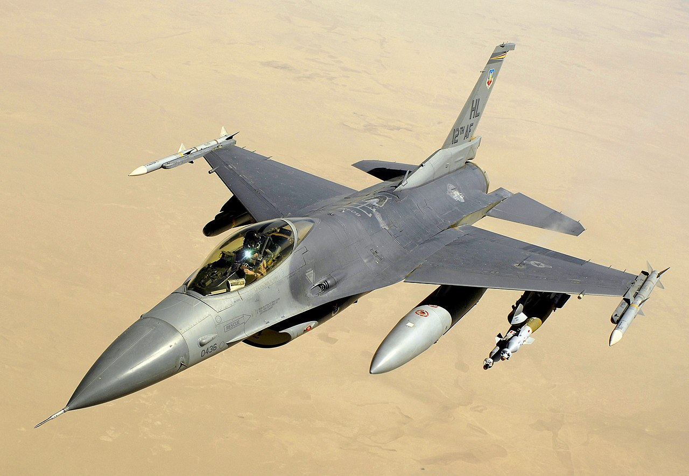
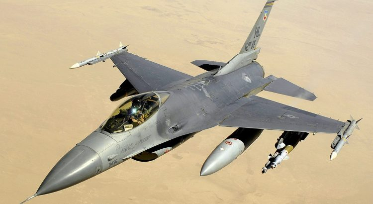
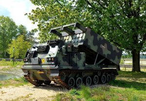

U.S. Approves $1.8 Billion in Arms Sales to Taiwan

According to Reuters, the US Defense Security Cooperation Agency (DSCA) issued a press release on Wednesday stating that the US Department of State has approved the potential sale of three weapon systems to Taiwan with a total value of approximately $1.8 billion.
The weapon systems involved in this batch of arms sales include the Seamaster multiple rocket system, extended-range out-of-land attack missiles, and F-16 new reconnaissance pods.
The press release stated that the State Department has officially notified the US Congress of these three arms sales cases.
Last week, Reuters reported that the White House has successively advanced the progress of five arms sales to Taiwan.The total value of these five arms sales to Taiwan is about $5 billion.
The US Department of State officially notified Congress on Wednesday that the arms sales to Taiwan included eleven 'Hippocampus Multiple Launch Rocket System' M142 launchers produced by Lockheed Martin, 64 Army Tactical Missile System M57 tactical missiles, seven M1152A1 multifunctional high-mobility vehicles, eleven M240B general-purpose machine guns and seventeen international field artillery tactical data systems.The total value of these weapon systems is approximately $430 million.
Another arms sale includes six 'F-16 New Type Reconnaissance Pods,' three mobile ground stations, and a fixed ground station, as well as their related parts, spare parts, integration and test equipment, support system and personnel training and technical support.The total value of this arms sale is about $367.2 million.
In addition, there is also an arms sales case involving 135 AGM-84H extended-range outland attack missiles, four AGM-84H SLAM-ER telemetry missiles, twelve CATM-84H aerial training missiles, and 151 containers, spare parts, repair parts, system support, test equipment, equipment training and engineering logistics support.The total value of this arms sale is approximately $1.008 billion.
In addition to the three arms sales to Taiwan announced by the US Defense Security Cooperation Agency on Wednesday, the US government is also expected to formally notify Congress about advanced drones, shore-mounted harpoon anti-ship missiles, and smart mines.Sources revealed to Reuters that the total cost of 400 missiles is about $2 billion.
Reuters writes that the U.S. Congress usually has 30 days to veto any arms sales.However, Reuters believes that because both parties in the U.S. Congress support arms sales to Taiwan, the probability of these arms sales being vetoed is very low.
Taiwan’s Ministry of National Defense also told Reuters that Taiwan welcomes the news because these weapons systems will enhance Taiwan’s defense capabilities.
The Chinese Embassy in the United States did not respond to Reuters’ questions, but the Chinese Foreign Ministry said last week that the US arms sales to Taiwan seriously undermine China’s sovereignty and national security interests, and called on the US to cancel all planned arms sales to Taiwan.China reiterated that it will respond legally and necessary to the development of the incident.
In addition, Robert O’Brien, the National Security Advisor of the White House, also said last week that although China does not yet have the ability to invade Taiwan by force, Taiwan needs to strengthen its own defenses so that they will face attacks in the future.
[bsa_pro_ad_space id=4]
Share on Facebook Tweet Follow us
Posted On: 2020-10-22T00:00:00
Posted By: Joyce Davis





Content Date: 2020-10-22
Download Date: 2021-07-09
Document ID: L0C04EPU5